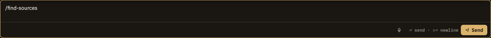

A skill is a ready-made thinking tool you launch on the note you're working in. Pick one from the Learning, Research, or Analysis menu (or the editor's right-click menu) and Minerva puts the relevant parts of your note to work for you. Almost every skill hands back its result as a proposal you review — nothing changes in your notes without a keystroke from you.
What happens when you run one
You don't have to prepare anything. Launch a skill and it draws on whatever it needs from where you are — the note you're reading, a passage you've selected, a claim under your cursor, related notes, or the source you're viewing.
1. It reads your context
The skill picks up just the material it needs for the job — the whole note, the passage you've highlighted, or the claim at your cursor. It never reaches beyond that.
2. It may ask a quick question
Some skills open a short form first — a dropdown or a text field. Excavate, for example, asks how deep to go: Quick, Standard, or Deep. Skills with nothing to ask start right away.
3. It works
Most skills open a new conversation already primed with your context, so you can watch it think and reply just like any chat. A few instead show their thinking in a compact panel at the bottom, with no back-and-forth.
4. It offers a proposal
When a skill wants to change your notes — filing a claim, suggesting evidence, drafting a summary, rewriting a note — it hands you a proposal to review. Nothing is written until you approve it.
You always have the final say
A skill is a helpful starting point, not a shortcut past your review. Whatever it opens follows the same rule as a conversation you began yourself: the tool proposes, you confirm. See The propose, review, approve loop and Proposals for how to review what a skill hands you.

Screenshot — Running a skill and reviewing its proposal
Where the result shows up
Two things can happen after a skill runs, depending on how it was built:
In a conversation
The usual way. The skill opens a new conversation tied to your note, with its opening prompt already in place. You read along as the answer comes in, and if the skill wants to change your notes, its proposal appears as a pending card in the Proposals panel.
In a panel at the bottom
A few skills, such as Excavate, work in a small panel instead of a conversation: you see the thinking stream in, then the finished text with Save as Note, Append to Current, and Copy. Here your click on a button is the confirmation step.